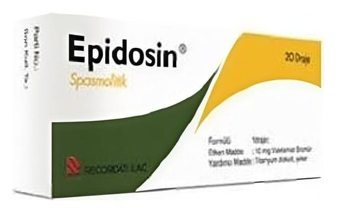

Epidosin Compositum Draje

Ne için kullanılır
KT · Bölüm 1EPĐDOSĐN COMPOSĐTUM, etkin madde olarak valetamat bromür ve parasetamol içerir. Genel olarak karın içerisinde bulunan organların (mide, barsak, idrar yolları, safra kesesi, rahim) kramp hallerinde belirtiyi geçici olarak gidermek için kullanılır. EPĐDOSĐN COMPOSĐTUM, 10 draje içeren ambalajlarda kullanıma sunulmaktadır.